Michigan Medicine
Designed an intuitive mobile navigation to allow for easy browsing between Michigan Medicine's four-site ecosystem.

Background
Michigan Medicine, University of Michigan's academic medical center, condensed their 300+ sites into a framework of four sites. The enterprise site represents Michigan Medicine as a whole, while the research, education, and patient care sites each represent one arm of the tripartite mission.
A desktop universal navigation was created to quickly navigate between the four sites without the user noticing, by maintaining a consistent top navigation and overall website experience.
Challenge
I was challenged with designing a mobile navigation that enables users to seamlessly browse between Michigan Medicine's four-site ecosystem.
Planning
I was brought in to design the mobile navigation after the desktop navigation was already approved, so before I began I wanted to make sure I fully understood the research and considerations that went into the design. I met with the UX designer who created the desktop navigation and reviewed the research they had conducted.
Desktop Navigation
The desktop navigation allows the user to quickly and easily navigate between Michigan Medicine's four-site ecosystem. The menu items change between the four sites, but the layout and design remains consistent. The main navigation is also a mega menu, and on hover the menu will open to expose the second level of information architecture to allow users to quickly navigate to the child pages.
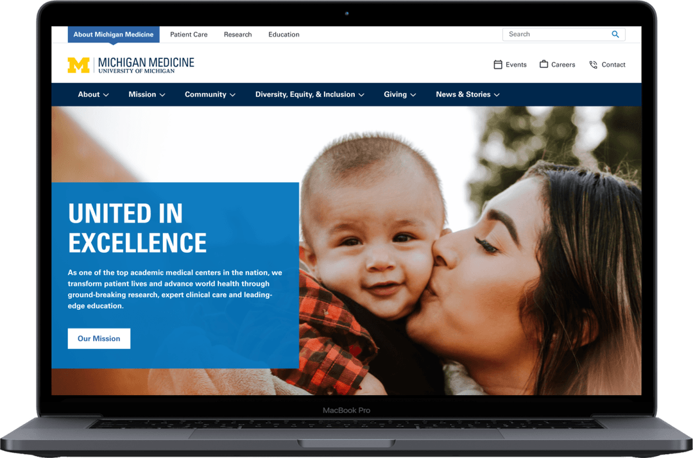
Wireframes
Once I was up to speed on the research for the project, I brainstormed the different approaches we could take with the mobile navigation. I narrowed down the ideas into these two main approaches: tabs vs dropdown.
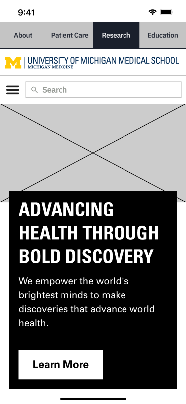
Version A - tabs
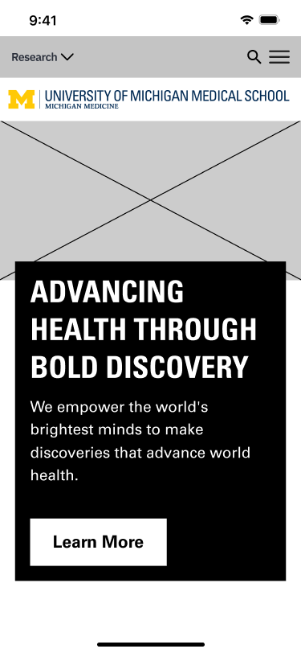
Version B - dropdown
I reviewed the wireframes with the larger internal team, including the developers, and we decided to move forward with the dropdown approach to prioritize usability and accessibility. The dropdown approach had a much larger touch target which would eliminate the concerns around misclicking of a tab.
Design
The next step was to build out the wireframes for the dropdown, search, and hamburger menu, so the UI designers would be able to apply the designs.
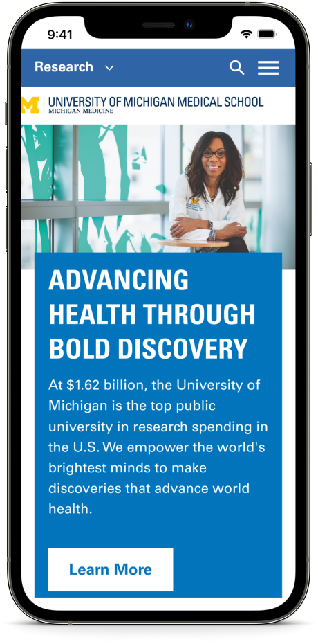
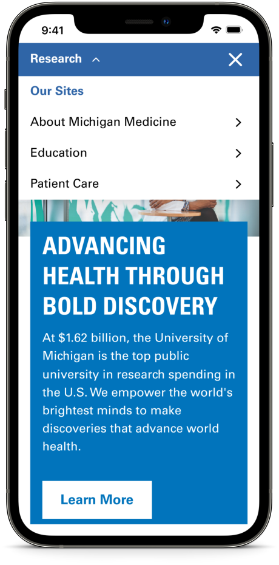
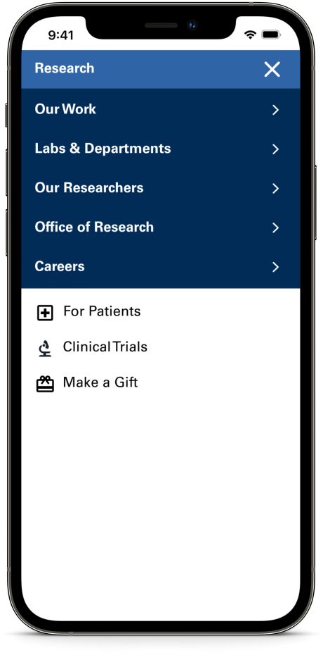
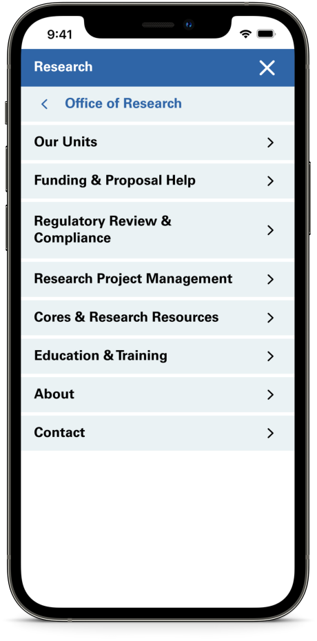
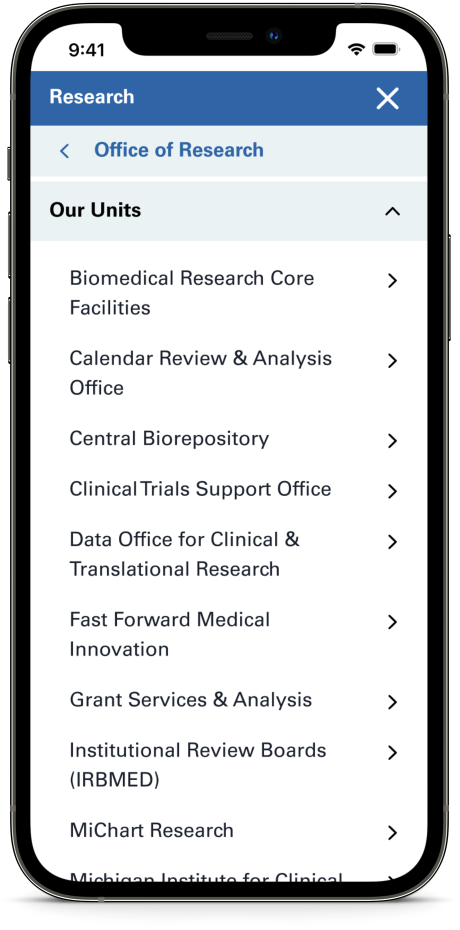
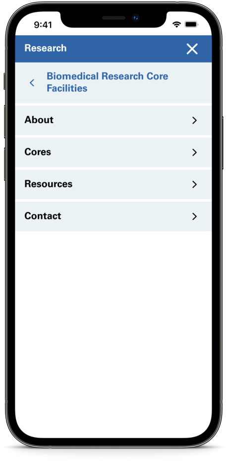
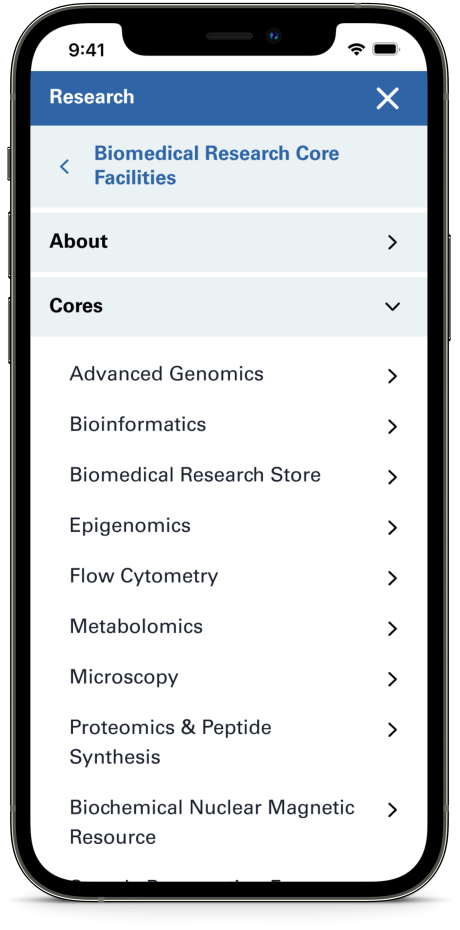
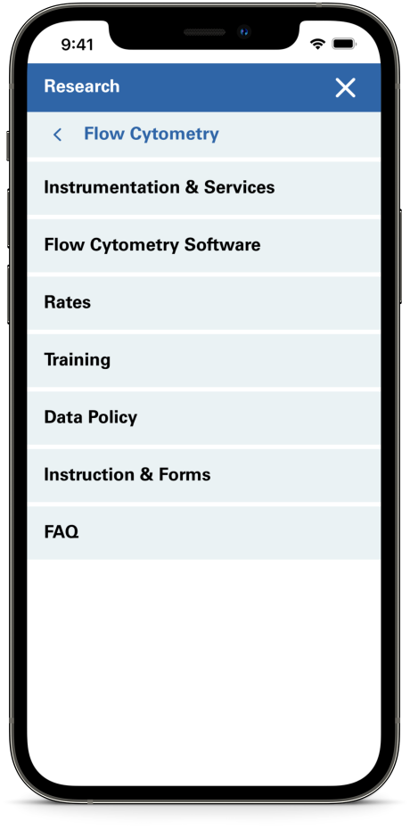
Unmoderated Test
I first conducted unmoderated user tests using Maze.co to gather quick feedback on the overall usability and designs. Because we already conducted usability testing and received feedback on the enterprise and research sites, unmoderated testing was an appropriate methodology to evaluate the navigation I had developed by seeing if participants can complete various tasks.
I used UserInterviews.com to recruit 15 participants who have received healthcare in or out of a hospital or doctor's office in the last 6 months.
Findings
- Participants had an accurate mental model of the hamburger menu. When given a task to navigate through the menu, almost all participants knew to immediately go to the hamburger menu.
- In fact, the mental model for the hamburger menu is so strong that when tasked to use the universal navigation, participants looked for it in the hamburger menu. Only 1 participant used the drop down menu for the universal navigation to get to another site.
"I had difficulty deciding when I should use the drop-down versus the hamburger button." - Participants were able to find the utility navigation within the hamburger with ease.
- When tasked to find their way out of a deep level of navigation and get back to the home page, the participants used the back chevron at the top of the menu, clicked the "About Michigan Medicine" title, or exited the menu.
- Within the hamburger menu, if there was a menu item with a sub-page, participants clicked on the chevron more often than clicking on the page name.
- Participants were able to find the search.
- Participants did not understand there are 4 different websites.
Recommendations
Rethink the universal navigation. Most users went to the hamburger menu for the task "Please open the menu that shows the other sites within Michigan Medicine", so the universal navigation menu should be included within the hamburger menu. The hamburger truly seems like the go-to starting point for users.
Updated Design
Based on the feedback received during moderated testing, the following changes were made to the designs:
- Selecting the hamburger menu will open the primary navigation menu. This is the default menu, so every time a user clicks on the hamburger, the primary navigation for that site will open.
- Selecting the "x" icon will close the menu and navigate back to the last page.
- Selecting the chevron icon will navigate the user to the next level.
- The utility nav will only be available on this screen when the primary navigation is shown.
- The universal nav will only be available on the default menu screen.
- Selecting the backwards chevron will navigate the user back to the previous level.
- Selecting the text will navigate the user to the landing page of the navigation item.
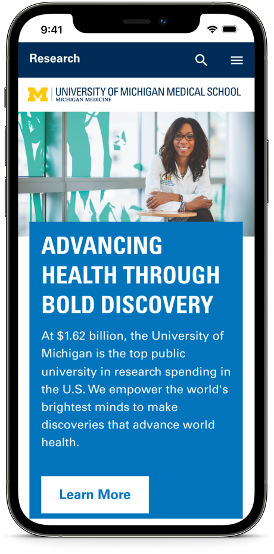
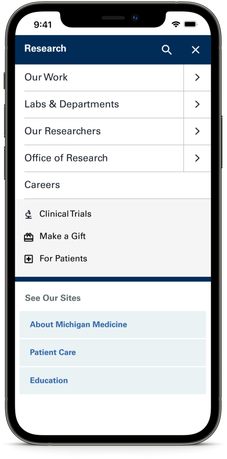
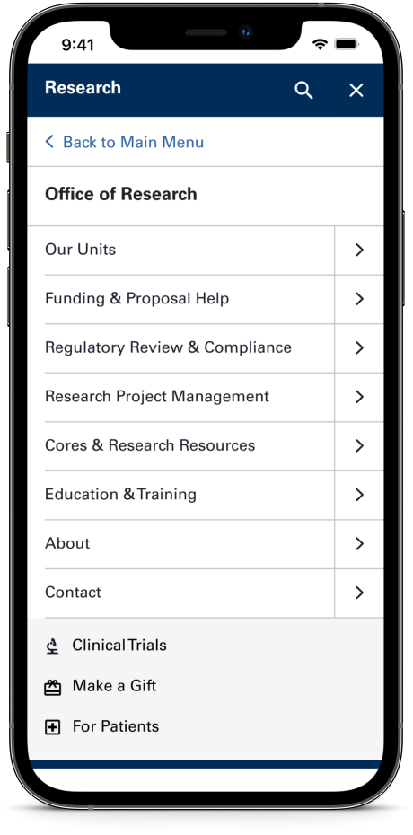
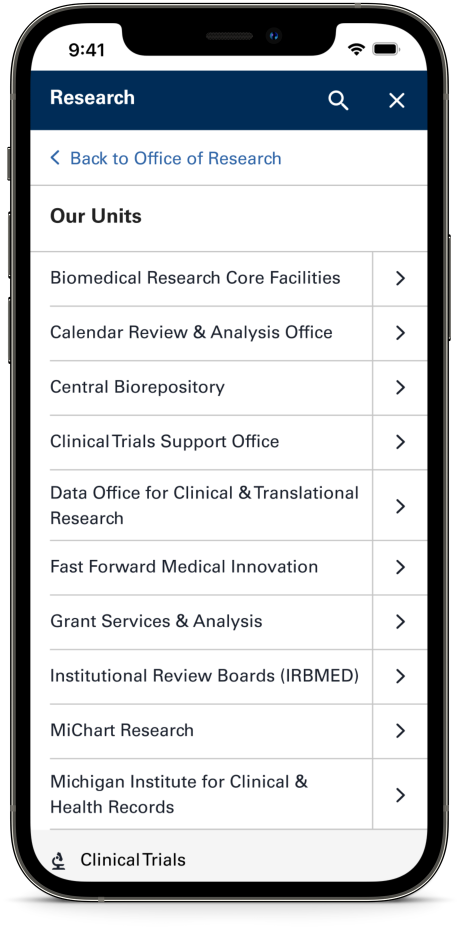
Moderated Test
Once the updated design was complete, I created a high fidelity prototype in Figma to conduct moderated user tests remotely over Zoom. I used this moderated testing to gather insights on how the participants feel about the overall experience, test my assumptions about what worked well, and test the revisions that have been made.
I used UserInterviews.com to recruit 8 participants who have received healthcare in or out of a hospital or doctor's office in the last 6 months.
Findings
- All participants were able to navigate between sites with ease. When given the task to find a doctor to treat arthritis, every participant was able to find the Patient Care Site quickly.
- When participants were tasked with finding where they could apply for a job at MM, every participant was able to find the "Careers" menu option and understand the utility navigation with ease. "This part feels very utilitarian in a good way."
- All participants "reset" themselves to establish their sense of place before starting a new task. Because the test tasks were structured to move from one task to another from interior pages and deep-level hamburger menu pages, all of the participants felt the need to establish their sense of place before moving onto the next task by resetting themselves to the primary menu first.
- All participants used the content on the landing pages to navigate to the subsections. This showed that the user's first instinct is not to navigate around using the hamburger menu, but instead to see if what they need is on the page.
What I learned from this project
Overall, my biggest takeaway from this project was the value of moderated user testing. While it was useful to gain quick initial feedback from unmoderated testing, the feedback received from moderated testing was more robust and comprehensive. Moderated user testing allowed for spontaneous discussion into how users think about and use the Michigan Medicine site. Being able to ask follow up questions and uncover unexpected insights from users produced useful findings and recommendations that helped inform the final mobile navigation design.